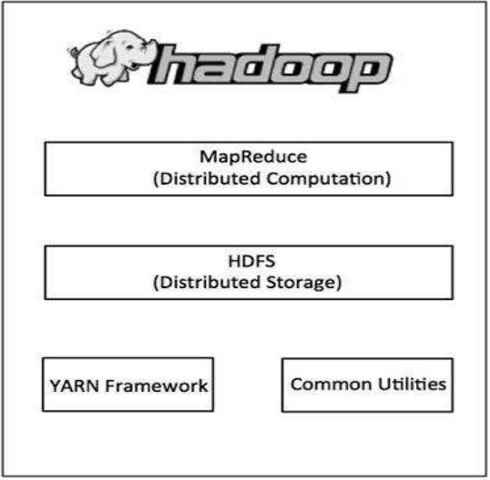
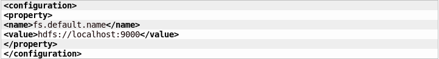
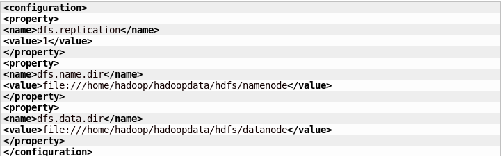
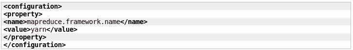
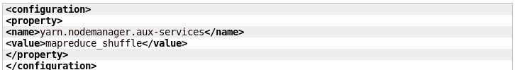
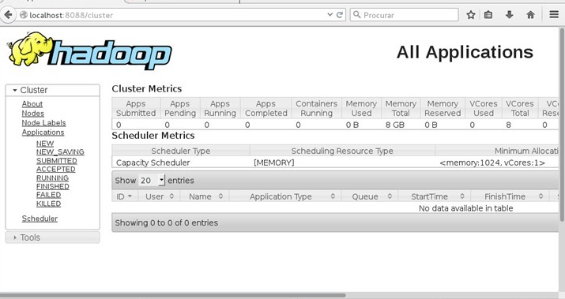

Instalação do Hadoop:
Esta atividade consistiu da instalação do Hadoop em um servidor linux.
Hadoop é um framework open source da Apache que permite distribuição do processamento de grandes conjuntos de dados em clusters de computadores usando modelos de programação simples. O Hadoop funciona em um ambiente que fornece armazenamento distribuído e computação entre clusters de computadores.
O Hadoop possui duas camadas principais:
(a) MapReduce (Processing/Computation layer) - Camada de processamento, e(b) HDFS - Hadoop Distributed File System (Storage layer) - Sistema de arquivos distribuídos.

Para a instalação do Apache Hadoop no Debian foram realizados os seguintes passos:
Obs: Para realizar a instalação do Apache Hadoop o Java deve estar previamente instalado.
1) Criação de um usuário para o sistema: (Opcional mas recomendado)
useradd hadoop
passwd hadoop
2) Em seguida criar uma chave ssh para o mesmo
su - hadoop
ssh-keygen -t rsa
cat ~/.ssh/id_rsa.pub >> ~/.ssh/authorized_keys
chmod 0600 ~/.ssh/authorized_keys
3) Download e instalação do hadoop
wget https://www.apache.org/dist/hadoop/core/hadoop-2.7.0/hadoop-2.7.0.tar.gzConfiguração
tar xzf hadoop-2.7.0.tar.gz
mv hadoop-2.7.0 hadoop
4) Deverão ser definidas as seguintes variáveis de ambiente no arquivo ~/.bashrc.
export HADOOP_HOME=/home/hadoop/hadoop
export HADOOP_INSTALL=$HADOOP_HOME
export HADOOP_MAPRED_HOME=$HADOOP_HOME
export HADOOP_COMMON_HOME=$HADOOP_HOME
export HADOOP_HDFS_HOME=$HADOOP_HOME
export YARN_HOME=$HADOOP_HOME
export HADOOP_COMMON_LIB_NATIVE_DIR=$HADOOP_HOME/lib/native
export PATH=$PATH:$HADOOP_HOME/sbin:$HADOOP_HOME/bin
Em seguida executar este comando para que as configurações tenham efeito na sessão atual
source ~/.bashrc
Depois disso deve-se alterar o arquivo $HADOOP_HOME/etc/hadoop/hadoop-env.sh e definir o caminho de instalação do Java na variavel de ambiente JAVA_HOME
EXPORT JAVA_HOME=/usr/java/jdk_1.8.0_20/
O Apache Hadoop tem muitos arquivos de configuração permitindo uma personalização de diversos aspectos da aplicação. Porém para esta atividade será configurado um simples nó de um cluster; para isso devemos acessar o diretório $HADOOP_HOME/etc/hadoop e alterar os seguintes arquivos.
core-site.xml  hdfs-site.xml  mapred-site.xmlÉ necessário renomear o arquivo mapred-site.xml.template. para mapred-site.xml.
 yarn-site.xml Feitas as configurações nos arquivos anteriores, vamos formatar o namenode usando o seguinte comando:
hdfs namenode –format
E então iniciar todos os serviços associados ao hadoop. Para tal basta que executem os seguintes comandos (com privilégios root):
cd $HADOOP_HOME/sbin/
start-dfs.sh start-yarn.sh
5) Acessar a interface do Apache Hadoop
Com os serviços inicializados acesse o endereço http://localhost:8088/cluster em seu navegador:
 Tudo pronto, o Hadoop já está instalado!